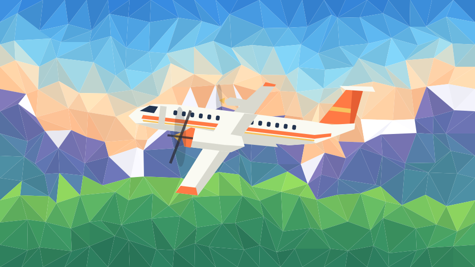

Cielo Abierto
Dirige Benedetto, tu aerolínea, desde Santiago: vuela a 24 ciudades reales de Chile y del mundo, gana dinero con cada billete y amplía tu flota hasta el jet de largo alcance.
En iPhone o iPad: abre esta página en Safari, toca el botón Compartir (el cuadrado con la flecha hacia arriba) y elige Añadir a pantalla de inicio.
Se juega en ordenador con teclado, o en el celular y la tablet con mandos táctiles (en horizontal).

Vuela de verdad
- Un avión de pasajeros de verdad. El Albatros 72 es un turbohélice regional de 17 toneladas: lento de reacciones, rápido en el aire y exigente al aterrizar.
- Física realista. Sustentación, pérdida, efecto suelo, viento, flaps y compensador afectan al vuelo.
- Cabina completa. Velocímetro, horizonte artificial, altímetro, rumbo y variómetro.
- Dos aeropuertos. Con luces PAPI para guiar la aproximación.
- Pasajeros a bordo. Cada vuelo lleva pasajeros: los virajes bruscos y los aterrizajes duros les quitan comodidad y estrellas.
- Destinos reales. Arica, Calama, Puerto Montt, Punta Arenas, Isla de Pascua, Buenos Aires, Lima, Bogotá, Miami, Madrid, Sídney y más, cada uno con su paisaje: desierto, Andes, Patagonia, costa o selva.
- Despegue, crucero y aterrizaje. Despegas en la ciudad de origen, sigues la ruta en un mapa del mundo y aterrizas en el destino.
- Modo aerolínea. Billetes, propinas, combustible, tasas y reputación. Empiezas con una avioneta de 3 plazas y puedes llegar al Cóndor 300, un jet de 300 plazas.
- Seis misiones de práctica. Del primer despegue a planear sin motor, con tus aterrizajes puntuados.
Mandos
WS Morro abajo / arriba
AD Alabear
QE Timón y rueda de morro
RF Más / menos gas
XZ Bajar / subir flaps
TG Compensador
Espacio Frenos
C Cambiar cámara
V Pilotaje asistido: el avión se mantiene estable solo
P Pausa
En el celular
Palanca Arrastra el dedo en la mitad izquierda: abajo sube el morro, a los lados alabea
Gas Desliza la barra de la derecha
Timón Mantén pulsado para seguir la pista
FlapsTrimFrenos Botones a la derecha
Inclinar Pilota girando el celular como un volante
Asistido Viene activado: al soltar la palanca el avión se queda estable